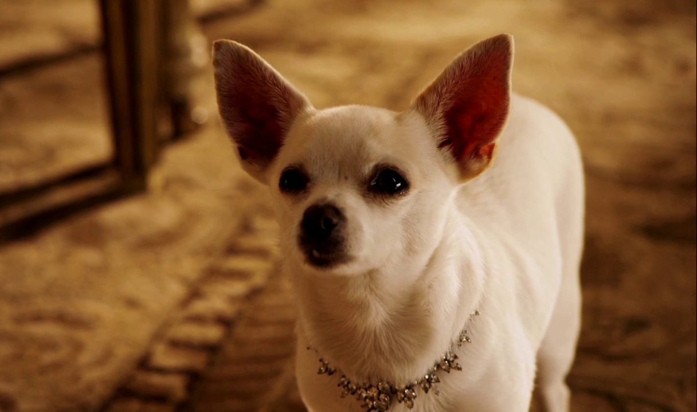
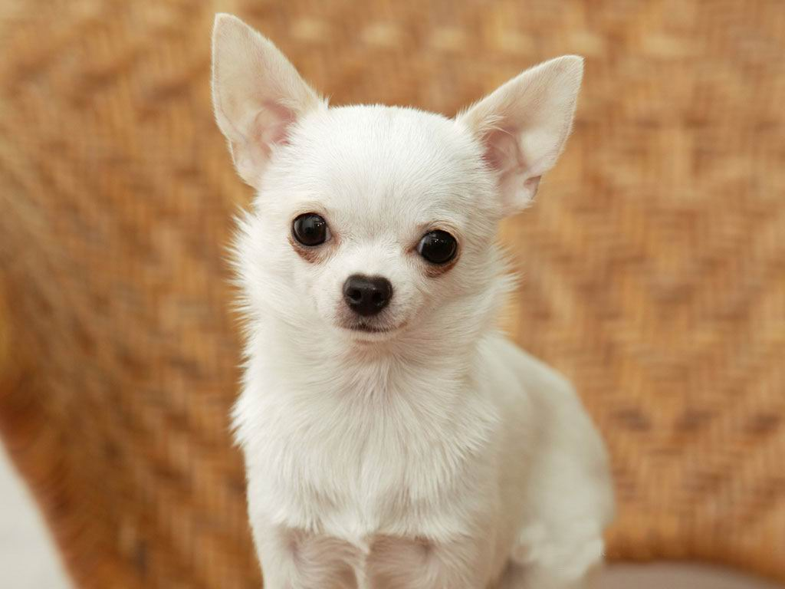
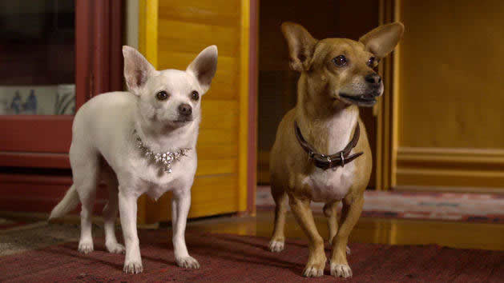

| RAZA CHIHUAHUA |  |
| Origen: México Aptitudes particulares: Perro de compañía y de caza. Esperanza de vida:13 años Talla del macho:16 - 20 cm. Peso del macho: 1 - 3.5 kg aprox. Talla de la hembra: 16 - 18 cm. Peso de la hembra: 1 - 2.5 kg aprox. |
Origen e historia de la raza
El Chihuahua proviene de México, de una región que lleva el mismo nombre que la raza. Hablando del Chihuahua lo hacemos de una de las razas caninas más antiguas y conocidas del mundo. En la época de los Aztecas, este simpático perro estaba considerado como sagrado y se cría fervientemente que que aportaba felicidad y alegría de vivir en las casas. Por estas razones, los Aztecas lo veneraban como a una divinidad y le consagraban culto. Este perro llegó a Europa a finales del S.XVIII. Aquí se convirtió rápidamente en un perro de compañía ideal gracias a su inteligencia, su vitalidad pero, pricipalmente, gracias a su amor y dedicación a sus dueños, a los que venera.
|  |  |